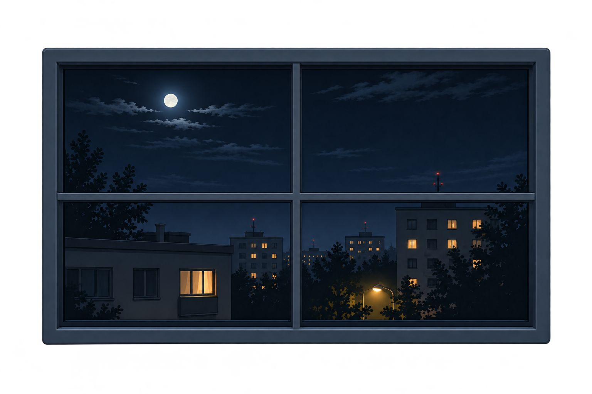

CASE 001 / LOCATION 04 DAVID / PRIVATE SPACE
ROOMS ▾
USER ENVIRONMENT / DAVID
COOL TONES · 01:20 AM
David
Three monitors, network tools and a blackboard full of notes. David knows his way around security software, but overlooks a basic risk at home.

THINK
SECURE
DavidIsTheBest
SECURE
DavidIsTheBest
DAVID / DESK AREA
BLACKBOARD